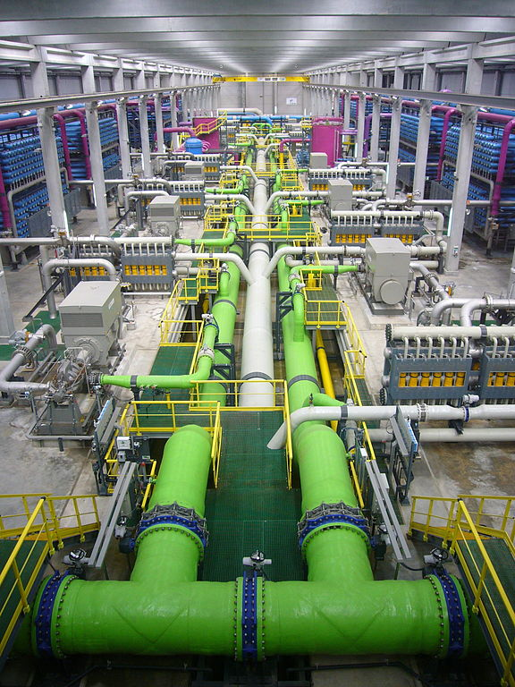
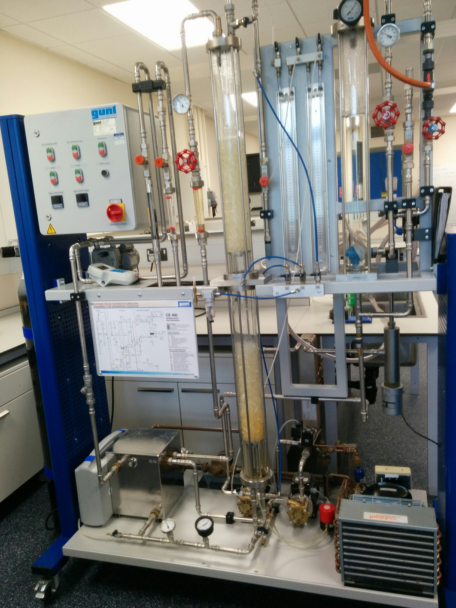

Lecture 01: Introduction
Teaching schedule:
- Three sessions (attendence recorded at one) with lecture recordings.
-
Laboratory exercise: (30% of the course mark)
One three hour exercise in the laboratory on one of three pieces of process-scale equipment:- Continuous distillation column.
- Gas absorber.
- Distillation lab and Gas absorber have videos to watch before. Follow the instructions for both pieces of equipment carefully.
- Revision session/office hours in revision week.
-
Exam:
(70% of the course mark)
3 hours, candidates attempt ALL questions.
Support
-
Dr Marcus Campbell Bannerman:
Room 266, Fraser Nobel Building
Email: m.campbellbannerman@abdn.ac.uk
Tel: 01224 274480 - Your primary support for the course content are the contact hours (lectures/tutorials).
- All other support and communication is provided through MyAberdeen, i.e., course announcements, lecture slides, room changes, and coursework submission.
Course Books
- All of my material is on this site (like Momentum, Heat, and Mass Transfer). I'll show the menu to see it all.
-
The texts for the course are:
-
Coulson and Richardson's Chemical Engineering:
-
Volume 2, “Particle Technology & Separation
Processes.”
The course will not concern itself with the particle technology or solid-fluid systems content of this book.(Available Online) -
Volume 6, “Chemical Engineering Design.”
The design sections for the separation process equipment (in particular Chap. 11, “Separation Columns”).(Available Online) -
“Transport Processes and Unit Operations”
by C. J. Geankoplis
This book is invaluable in linking my last course HMMT and separation processes. It is used for many of the worked examples in the course, and the course is laid out in the same pattern as the book.(Available in the Library)
-
Volume 2, “Particle Technology & Separation
Processes.”
-
Coulson and Richardson's Chemical Engineering:
- Separation processes are a fundamental unit-operation used throughout the process industry.
- All raw materials (e.g., ores, crude oil, foodstuffs) are found in an impure state and must be separated before being fed into other plant processes.
- Products from reactors and other unit operations (e.g., alcohol from fermentation, synthesis of drugs) usually exit the process in low concentrations and must separated from the feedstock elements (which can be recycled) before the final product is obtained.
-
Thus we can identify three general areas of separation: (1)
input purification, (2) reactant recovery to increase
yield/conversion, and (3) product purification.
A representative sketch of many processes, illustrating the importance of separation at every stage.
- All separation processes exploit either a mechanical/physical difference or a thermodynamic difference between two or more components to effect a separation. I.e., mass spectroscopy (mechanical) or distillation (thermodynamic).
- The separation of multiple components is generally called fractionation and it can be carried out by repeated binary splits. In this course we focus mainly on binary systems for simplicity, even lumping many real components into a single "pseudo" component to make the system binary! E.g., consider the binary air-water system, which is actually H2O, O2, N2 etc.
- There are many terms for separation but many only communicate the perspective of the engineer designing the separation. For example, purification usually indicates the designing engineer wants high concentrations and may not care about recovering the impurities, but it does not describe the underlying method.
- There are of course more exact terms which describe the actual operating principles of the separation process.
Each separation technique below that isn't mechanical uses a different underlying thermodynamic driving force to power it. The topics of this course are highlighted in bold.
- Evaporation: Removal of components which boil (volatile) from components which do not (involatile).
- Distillation: Separation using the uneven distribution of volatile components between liquid and gas phases.
- Absorption: Similar to evaporation but for gas-liquid systems, i.e., dissolution of small amounts of a highly volatile gas in a relatively involatile liquid.
- Liquid-liquid extraction: As above, but using two liquid phases (i.e., oil and water).
- Crystallisation (see Separation Processes 2): Precipitation of solids which typically have a different concentration from the "mother" liquor (i.e., see freeze distillation of alcohol). Often driven by heating/evaporation rather than cooling as its cheaper!
- Drying (see Separation Processes 2): Evaporation where solids are separated from liquids, typically after crystallisation has completed and often driven by evaporation.
- Mechanical-physical separations (see Separation Processes 2): These are filtration, settling, centrifuging and size reduction which use mass or size difference to separate components.
- Membrane separation (level 5): Pressure-driven selection via differing rates of permeability.
- Adsorption (level 5): Selective adsorbtion of gas components onto a solid surface.
- Liquid-solid leaching (level 5): Dissolution of part of a solid in liquid.
- Ion exchange: E.g., exchange of "hard" ions Ca2+ and Mg2+ for 2Na+ and 2K+ to "soften" the water. Typically uses solid-liquid systems.
- Electrolysis: Using an electric potential to drive an exchange (see aluiminium production).
-
The thermodynamic (non-mechanical) approaches can be classified
into two major categories of separation processes:
-
Equilibrium (limited) processes:
In equilibrium processes, two phases (vapour, liquid or solid) are brought to contact with each other, mixed thoroughly, then separated with a redistribution of the components between phases. Multiple contacts are often made in a series of cascading steps in which the two-phases flow counter-current to each other. At each contact, the phases approach thermodynamic equilibrium. One example of an equilibrium limited process is distillation. Such processes are often designed through algebraic balance equations. -
Mass-Transfer limited processes (rate-limited):
In mass-transfer limited processes, one component of a feed stream is transferred from the feed phase into a second phase due to a chemical potential/pressure gradient. Although thermodynamics are again driving the separation, the limiting step upon which design is based is the rate of transfer of the particular component from the feed material to the second phase. One example of a rate-limited process is membrane separation. Such processes are often designed through differential balances.
-
Equilibrium (limited) processes:
- Its important to note that “equilibrium” processes also have mass-transfer limitations which must be modelled to determine the size of the process equipment (and we will come back to this in plate/packed column design) but these are small enough that we can construct equipment which approaches the thermodynamic limitations of the system.
-
The fundamental concepts behind these two classifications were
covered in the prerequisites for the course:
-
EX3029
- Chemical Thermodynamics
This course provided you with the understanding of the driving forces behind equilibrium separation processes. For example, relative volatility, equations of state, Raoult's law, activity coefficients. -
EX3030
- Heat, Mass, and Momentum Transfer
This course prepared you to understand and perform the calculations behind rate-limited separation processes.
-
EX3029
- Chemical Thermodynamics
Example: Seawater purification
The “Al Khobar 2” flash distillation plant in Saudi Arabia for the desalination of sea water producing 26,700 m3 of fresh water a day.
A simplified diagram of a flash distillation unit. These are equilibrium based processes where instantaneous boiling due to a sudden pressure drop causes a stream to split into two. "Flash" calculations is now slang for any calculation to determine if a mixture is a gas, liquid, or both under specified conditions.


Course Outline
The outline for the course is:
- Introduction to separation processes fundamentals. Single stage evaporation.
- Multi stage evaporation and non-ideal properties (boiling point rise).
- Single stage absorbtion processes.
- Multi-stage absorbtion.
- Flash/single-stage distillation.
- Multi-stage distillation.
- Advanced Multi-stage distillation, efficiencies, tray efficiencies, vapour velocities.
- Revisiting absorber design and breaking azeotropes.

Sneak peek at the distillation equipment

Sneak peek at the absorption equipment
Learning objectives
- To understand the structure of the course.
- To be able to name many different separation processes (e.g., distillation, membrane, evaporation, crystallisation)
- To know the two classes of separation processes, equilibrium and mass-transfer limited processes. You should be able to name several.
- To understand the basic operating concept of a flash-drum and a membrane reverse-osmosis plant.